Extraescolars 2026-2027
Tria l'activitat per a vore el seu dossier i inscriure't
Extraescolars per al curs 2026-27: activitats des d'Infantil a Primària perquè les nostres criatures gaudeixen, practiquen esport, continuen desenvolupant les seues habilitats i capacitats, i també perquè ajuden a conciliar a les famílies de l'escola.
Com sempre, tindrem extraescolars privades, impartides per empreses o professionals, i extraescolars municipals, facilitades per la Fundació Esportiva Municipal, amb duració anual i preu reduït.
Les extraescolars es desenvolupen d'octubre a maig, tant en horari de menjador com de vesprada de 16.30 h a 17.30 h o de 17.30 h a 18.30 h, i els divendres de 15 h a 16.30 h.
Per poder participar en les activitats extraescolars privades sense pagar matrícula, cal fer-se soci/sòcia de l'AFA abans del 30 de setembre — a través d'Aulazon.
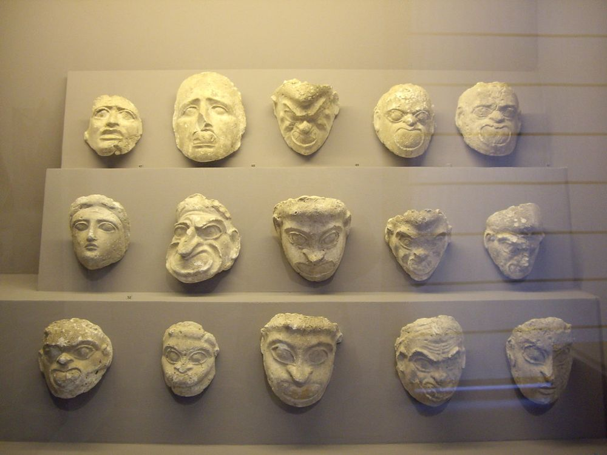
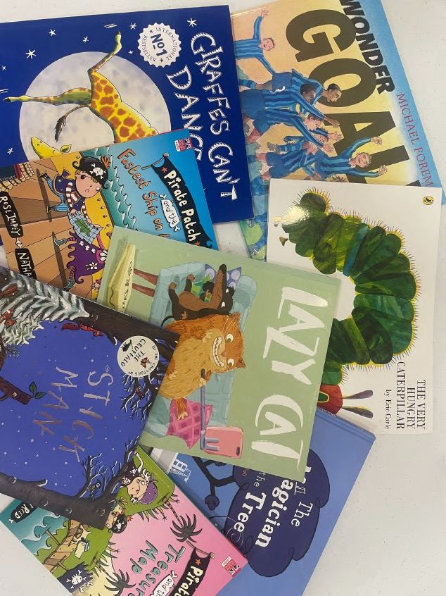
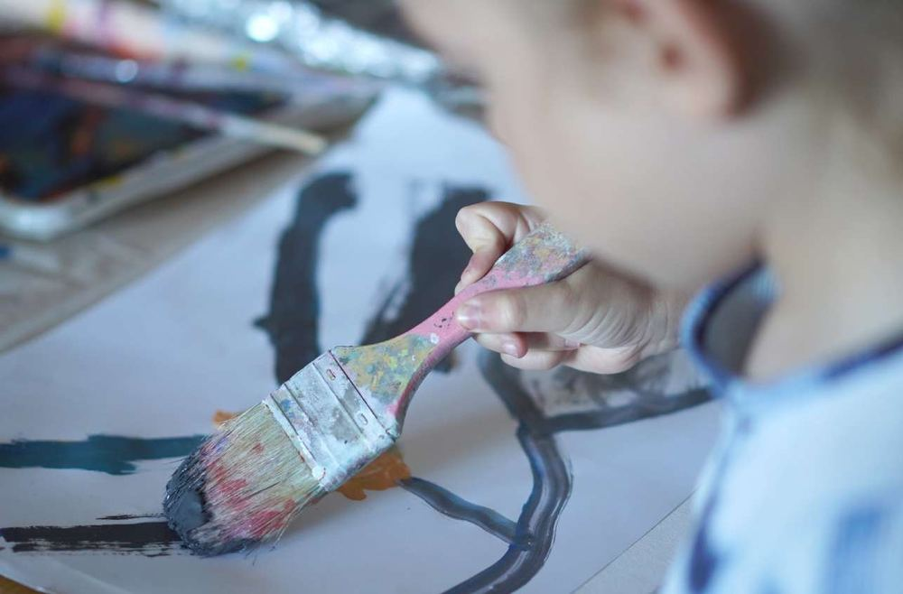
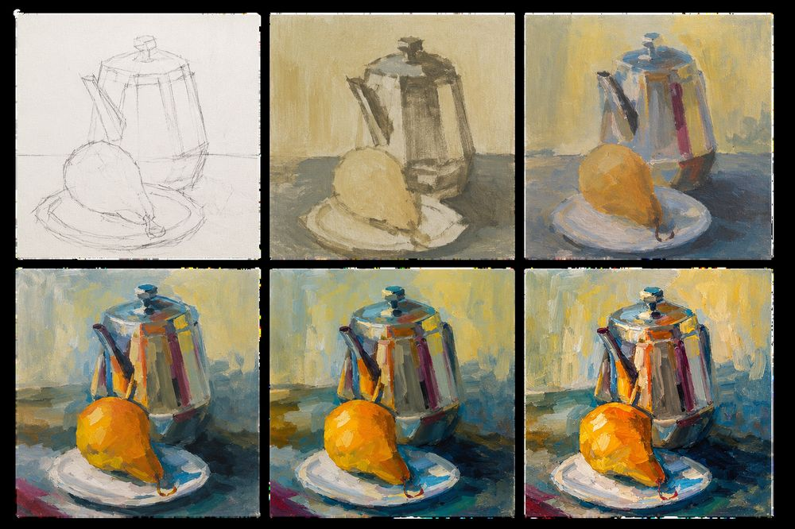

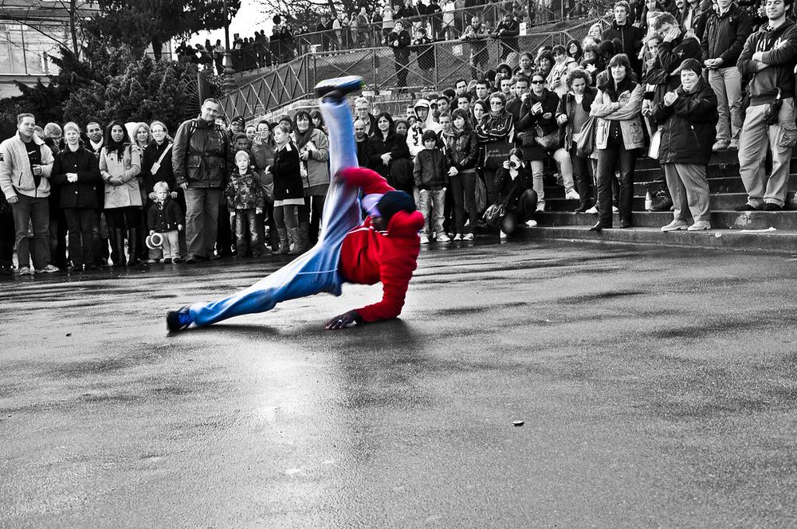

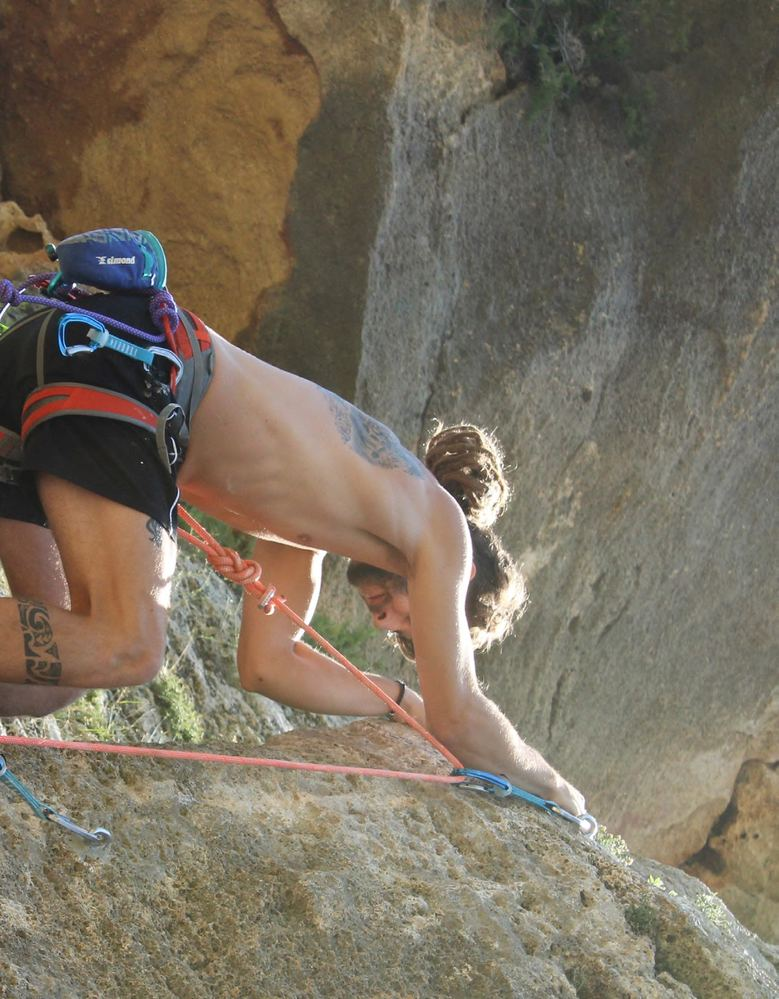


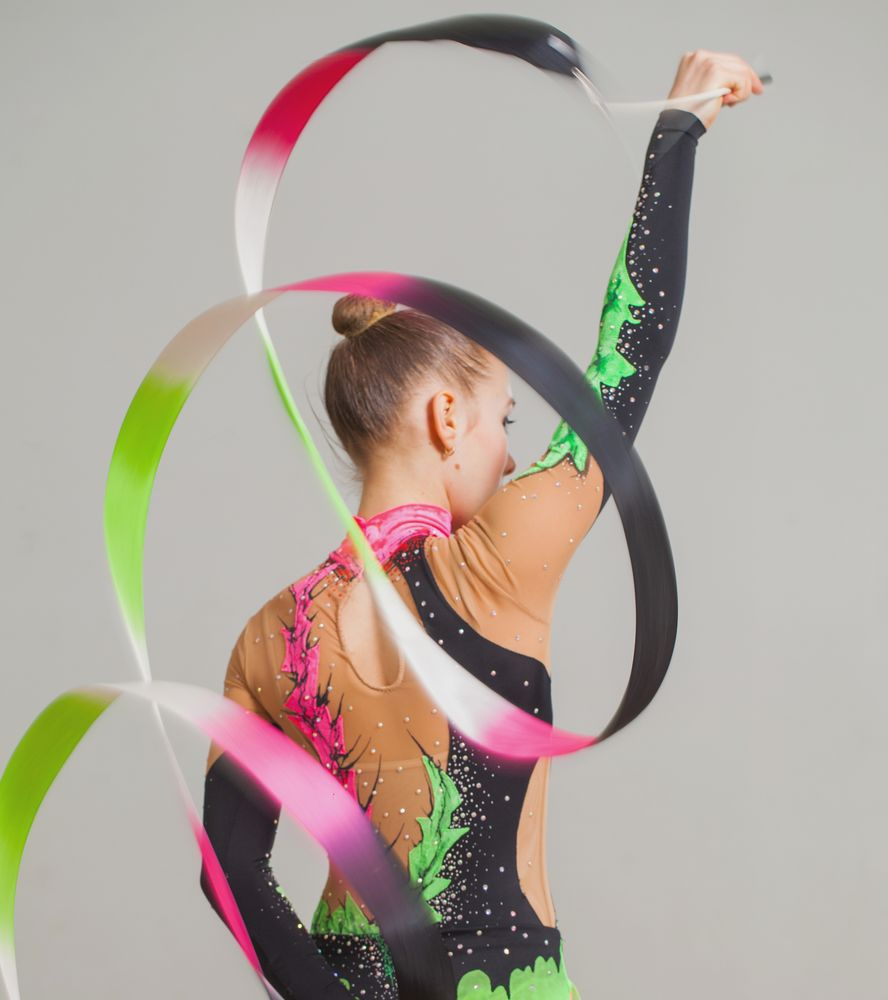
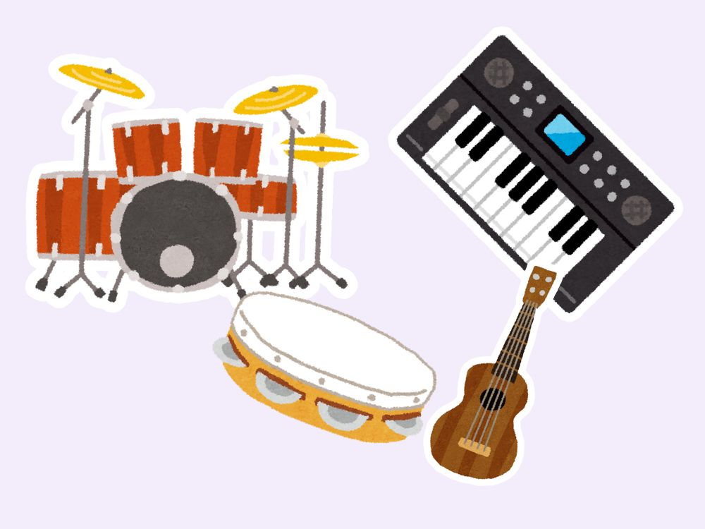
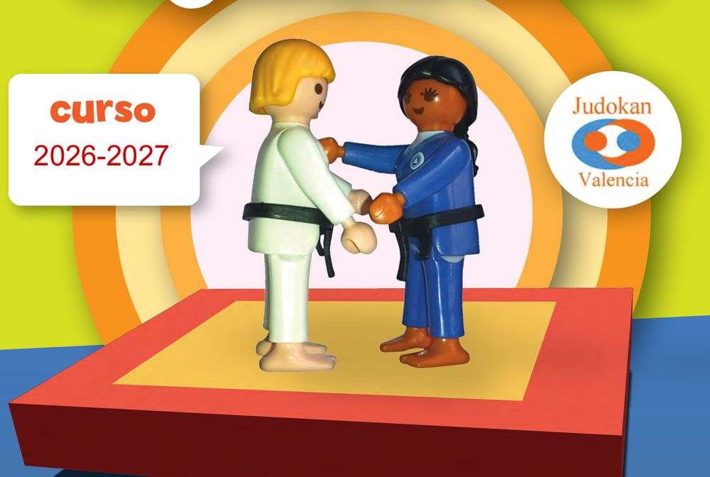
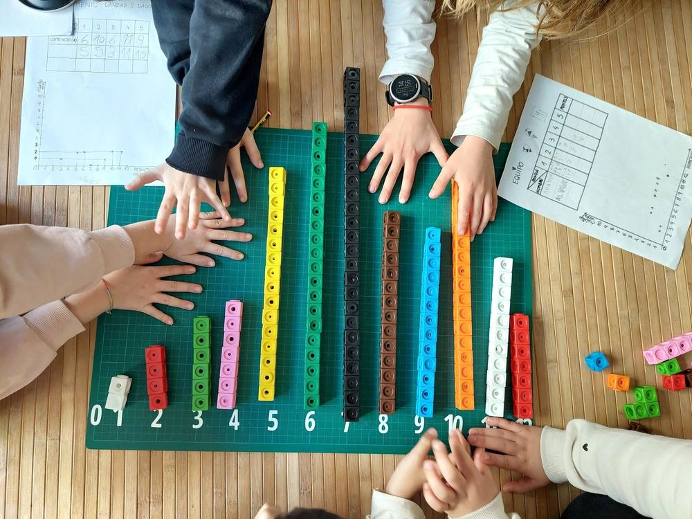

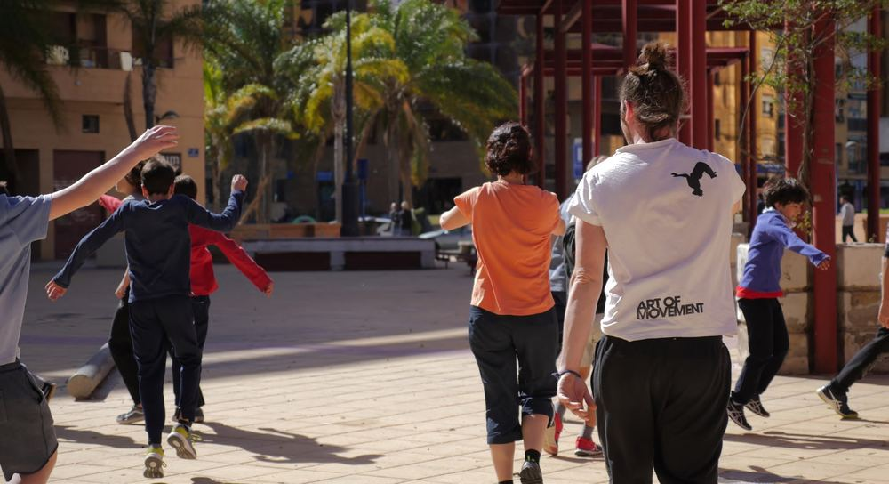

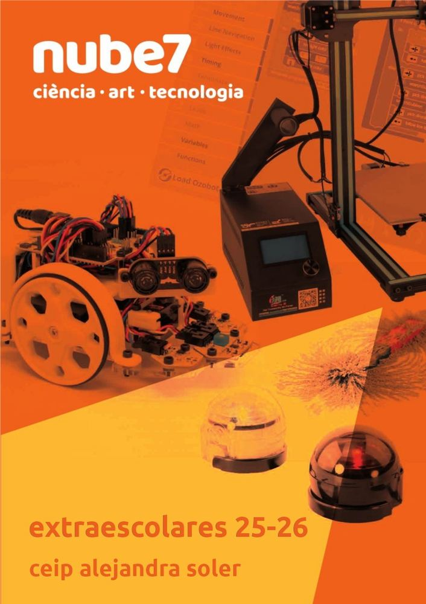
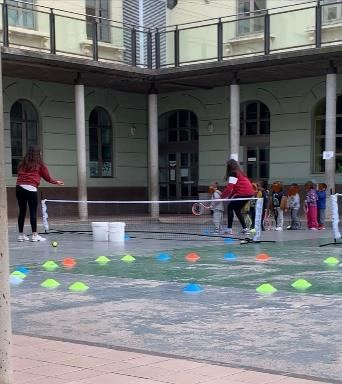
Horaris per curs
Horaris del curs 2025-26. Els del curs 2026-27 es publicaran ací quan estiguen tancats.
**Les activitats amb dos asteriscs, signifiquen que son activitats municipals, i per tant, el preu és més reduït.
Horari per nivell/curs
Baixes
Qualsevol baixa en alguna activitat s'ha de comunicar directament al monitor/a o empresa que la imparteix, amb còpia a extraescolarsalejandrasoler@gmail.com. L'admissió es fa per ordre d'inscripció.